Shichigahama
Shichigahama · Miyagi
Shichigahama
Highlighted on the Miyagi map.
Stay
旅館やまに荘
Ryokan Yamani Sou
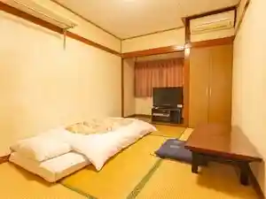
オーシャンビューリゾートＳＨＩＣＨＩＮＯＨＯＴＥＬ
SHICHINOHOTEL
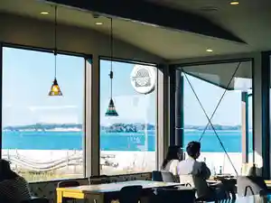
Dining
シチノカフェ&ピッツァ
Shichinokafe & Pittsua
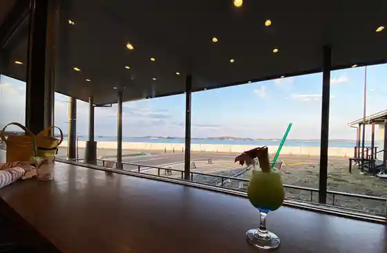
ARTCAFEBAR SEASAW
ARTCAFEBAR SEASAW
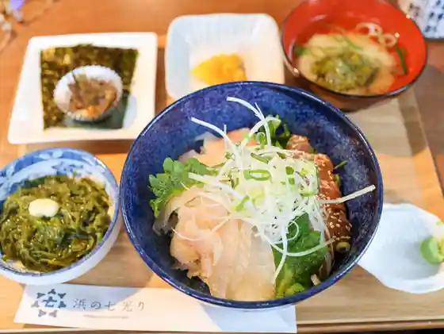
浜の七光り
Hama No Nanahikari Ri
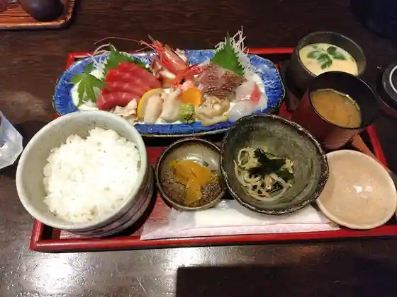
和食家TADA
TADA
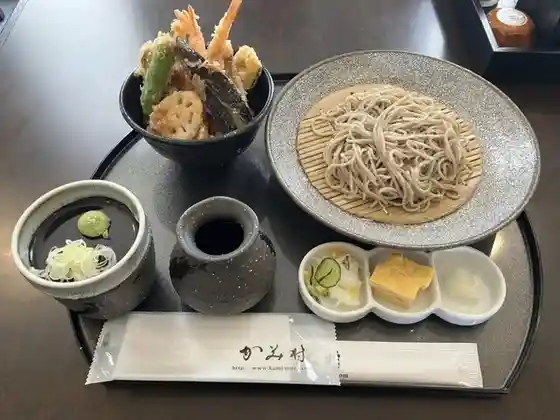
かみ村
Kami Mura
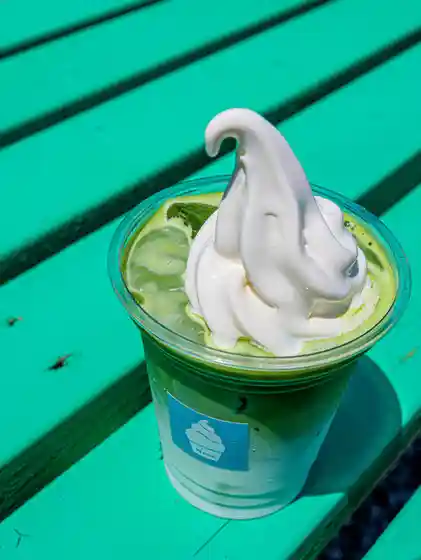
ソフトクリームNana
Sofutokuriimu Nana
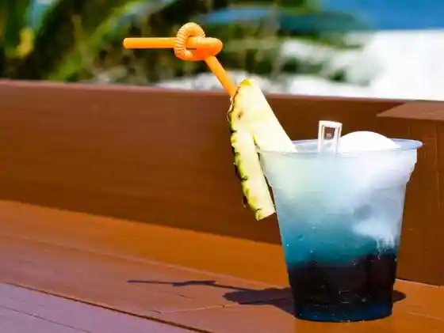
Luana Garden Place
Luana Garden Place
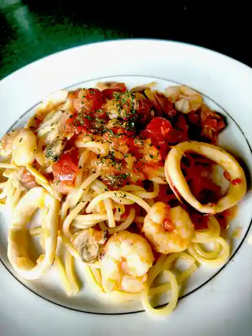
カフェ ラ ルナ
Kafe Ra Runa
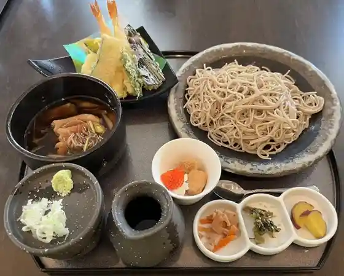
一匠庵
Ichi Takumi Iori
菜菜cafe
cafe
日和
Hiyori
とんかつ すず広
Tonkatsu Suzu Kou
喜ぜん寿司
Ki Zen Sushi
EAST COAST BURGER SHOP
EAST COAST BURGER SHOP
シチノ焙煎所
Shichino Baisen Tokoro
まんぷく食堂
Manpuku Shokudo
CAFE Greedy
CAFE Greedy
海鮮処 魚将
Kaisen Tokoro Sakana Shou
TAIYO sunny village
TAIYO sunny village
La cote Kohama
La cote Kohama
寿司喜
Sushi Ki
浜しんラーメン
Hama Shin Raamen
おさかなマート 七のや
Osakana Maato Shichi Noya
サンロード ヤマザワ汐見台店
Sanroodo Yamazawa Shiomidai Mise
Cafe TIME
Cafe TIME
MATTY'S
MATTY&39S
Welina
Welina
orange nico
orange nico
朝日とコーヒー
Asahi To Koohii
かぼちゃ
Kabocha
ミニストップ 七ヶ浜汐見台店
Minisutoppu Shichigahama Shiomidai Mise
丸要精肉店
Maru You Seinikuten
釣キチ七ヶ浜
Tsuri Kichi Shichigahama
どら焼き専門店YURINAN 七ヶ浜店
Dora Yaki Senmonten Yurinan Shichigahama Mise
かぼちゃ
Kabocha
みお七ヶ浜 売店
Mio Shichigahama Baiten
星のり店
Hoshi Nori Mise
門ぜん
Mon Zen
喫茶・軽食 ももか
喫茶・軽食 ももか
みっちゃん
Mitchan
四季の彩り処 ほのか
Shiki No Irodori Tokoro Honoka
浦霞の店 キリカブ
Uragasumi No Mise Kirikabu
御殿場
Gotenba
Uminoeki Shichinoya
Uminoeki Shichinoya
Minato Hanten
Minato Hanten
Mori to Umi No Gakko Mia Madre
Mori to Umi No Gakko Mia Madre
Kosen
Kosen
Bakery Rivieres
Bakery Rivieres
Yamajyu Sushi
Yamajyu Sushi
Suzuhiro
Suzuhiro
Toyama Sushi
Toyama Sushi
Totoya
Totoya
Koran
Koran
Abe Shokudo
Abe Shokudo
Tofuya Ramen
Tofuya Ramen
Micchan
Micchan
Nana Cafe Kirikabu
Nana Cafe Kirikabu
Shop
Shichigahama Tourism Exchange Center
Visitor info, rentals, and local guidance by the beach
Sights
Tamon-zan Scenic View
Coastal lookout known as one of Shichigahama's classic views
Shichigahama Lifelong Learning Center Campground
Town campground beside the lifelong-learning campus
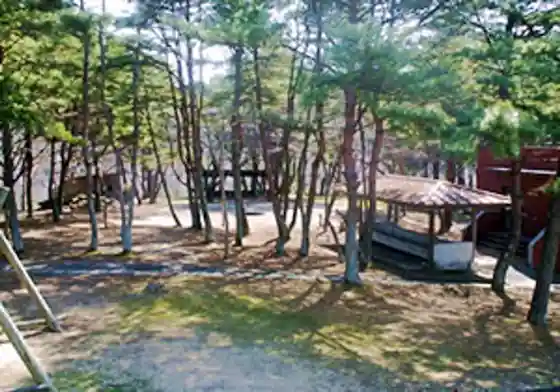
Shichigahama Aqua Arena
Health and sports center with pool facilities
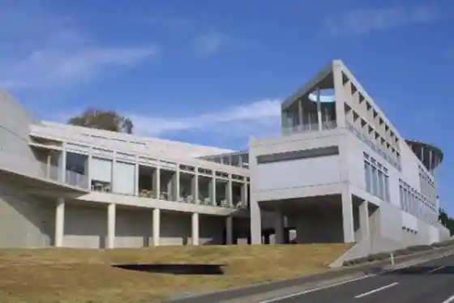
Matsushima Paragliding Experience
Paragliding flights over the Shichigahama–Matsushima coast
Shichigahama Lifelong Learning Center
Town culture and learning campus
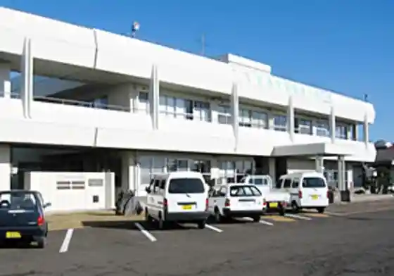
Kasaiwa-do
Historic hall site in Higashimiyahama
Hanabushi Shrine
Coastal shrine in Hanabuchihama
Shichigahama History Museum
Municipal museum of local archaeology and history
Shobuta Beach
Historic swimming beach facing Matsushima Bay
Shichigahama International Village
International exchange and culture facility
Shichi no Resort
Beach resort complex with hotel, activities, and bay views
Yogasaki Ohajiki Art
Outdoor glass-marble art installation at Kamei Plaza
Nagasuka Multipurpose Plaza
Open plaza near Shobuta Beach